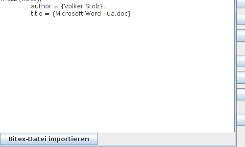
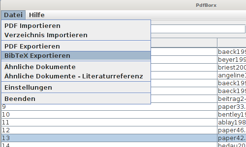
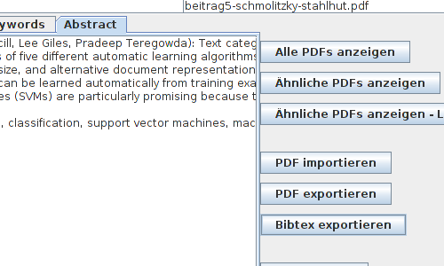

PDFBorx bietet die Möglichkeit Bibtex-Dateien für Dokumente extern zu laden und genauso Bibtex-Dateien zu importieren
Um für ein Dokument ein Bibtex-Dokument zu importieren klicken sie das betreffende Dokument in der Liste an und wählen unten den Reiter Bibtex. Unter der Anzeige der Bibtex-Daten für das gewählte Dokument befindet sich die Schaltfläche zum Import der Bibtex-Datei.

Zum exportieren eines Bibtex-Dokuments klicken sie im Menü auf "Datei" und anschliessend auf "Bibtex exportieren".

Alternativ finden sie rechts neben den Bibtex-Daten auch eine Schaltfläche "Bibtex exportieren".

[zurück]